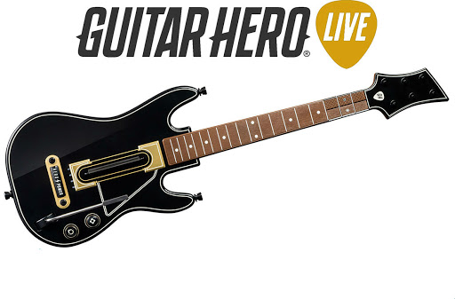

Ритм-игры типа Dance Dance Revolution и Guitar Hero – основанные на музыке игры, где нужно успевать за ритмом песни или мелодии, для набора очков нажимая соответствующие кнопки на контроллере в точно выверенное время. Иногда этот жанр называют также музыкальными играми.
Интересный факт: Первой ритм-игрой считается PaRappa the Rapper, вышедшая на первой PlayStation в 1997 году.